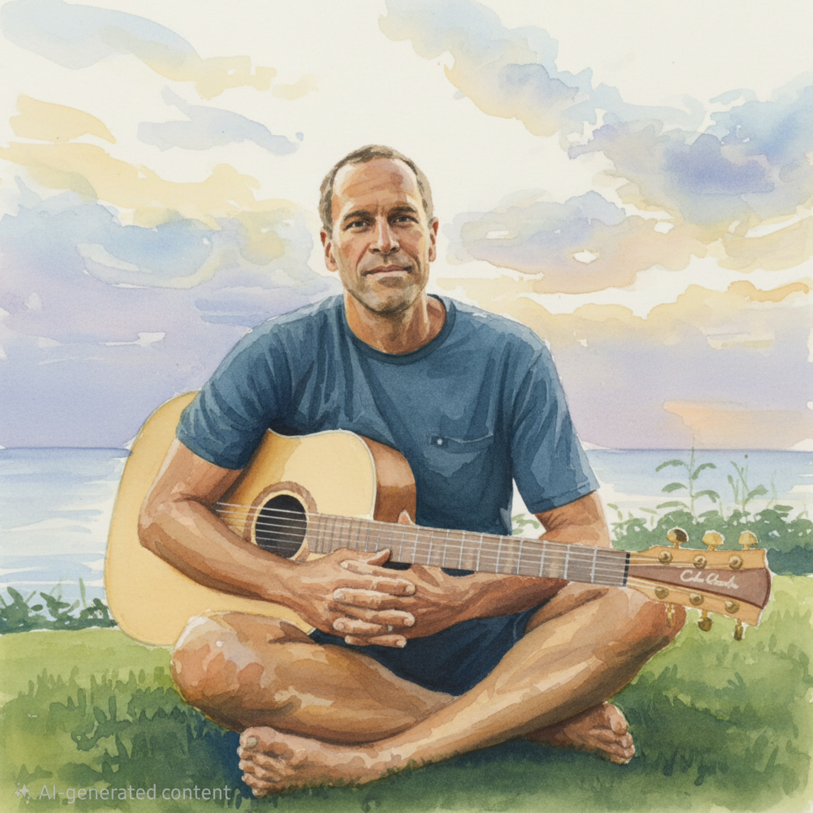

Jack Johnson: Surf, Story, and Staying Grounded
I had a guitar in my hands from a young age, and being the exact same age as Jack Johnson, I grew up alongside the same nineties musical landscape he did. Yet through my twenties, between juggling sports, socializing, and settling into steady office jobs, my guitar mostly stayed in the background. I loved music and was always the first to sing along while my brother and friends worked out the latest Oasis tracks, but I never quite got around to honing my own technique.
That changed in the early 2000s when I first heard Jack—and suddenly, singing along wasn't enough. I needed to figure out how to play like that myself.
What pulled me in wasn’t the typical rock-star ambition of chasing the biggest stage or the loudest production; it was the exact opposite. Growing up on Oahu’s North Shore, Jack’s first love was the ocean and the lens. In the late nineties, he was hauling 16mm cameras to remote corners of the globe—places like Port Blair in the Andaman Islands—to film raw, soulful surf journeys for Thicker Than Water and The September Sessions. The songs came later, almost by accident, written in the quiet spaces between swells and around beach fires with friends.
By the time I finally committed to my playing in my thirties, Jack’s stripped-back, Hawaiian-inflected style had become my benchmark. I still fondly remember buying a travel guitar during my honeymoon in India and spending hours working out the percussive slapping rhythm on “Flake” and the rolling fingerpicking behind “Traffic in the Sky.” That unhurried sensibility—where space, warmth, and groove matter infinitely more than flash—completely shaped how I write and record today. Whenever I’m working on a track in my home studio, Jack is the voice reminding me not to over-produce the soul out of it. If a song doesn't hold up with just an acoustic guitar and an honest vocal, no amount of studio trickery is going to save it.
Just as influential is how he approaches collaboration and community. Jack built his career around a tight circle of friends, surfers, and musicians—turning Brushfire Records and his solar-powered Mango Tree Studio in Hawaii into an extension of his home life rather than a corporate machine. That ethos sits right at the heart of how I make music. For me, songwriting has never been about shooting for the stars or chasing commercial validation; it’s about connection, trading ideas with friends, and capturing a moment that feels true to where you are in life.
Beyond the fretboard, there is a quiet integrity to how he carries himself in the world. Keeping his family firmly at the center of a life on the road, and channeling his platform into genuine environmental stewardship through the Kokua Hawaii Foundation, he proved that you don’t have to compromise your values—or your sense of home—to make meaningful art.
In a noisy world that constantly pushes you to scale up and reach higher, Jack Johnson remains my favorite reminder to stay grounded, keep the circle close, and let the music breathe.
